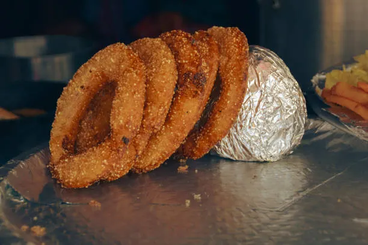
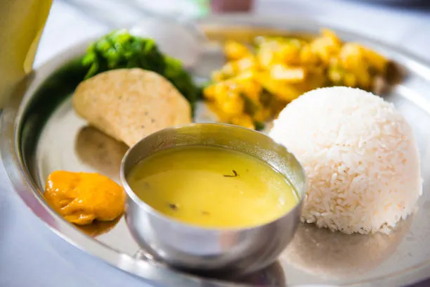
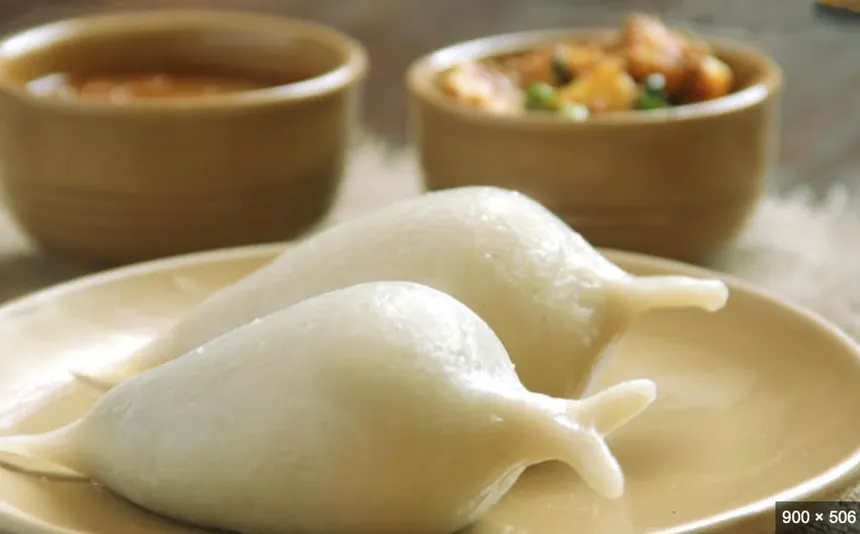

Momo
Momo are dumplings filled with vegetables or meat. They are cooked by steaming.
Read MoreHere are some famous foods from Nepal.
Momo are dumplings filled with vegetables or meat. They are cooked by steaming.
Read More
Sel roti is a crispy rice bread that is commonly prepared during festivals.
Read More
Dal bhat includes rice, lentil soup, vegetables, and pickle.
Read MoreChowmein is a popular noodle dish in Nepal, often served with vegetables and meat.
Read More
Yomari is a sweet steamed food filled with molasses and sesame.
Read More